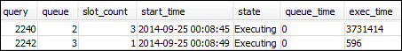
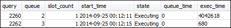
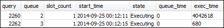
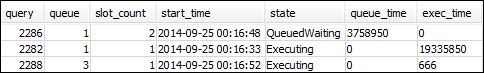
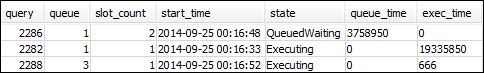

第 4 节：使用 wlm_query_slot_count 临时覆盖队列中的并发级别
有时，用户可能会为某个特定查询临时需要更多资源。如果是这样的话，他们可以使用 wlm_query_slot_count 配置设置来临时覆盖查询队列中分配槽位的方式。槽位 是用于处理查询的内存和 CPU 的单位。您可在偶尔使用消耗集群中大量资源的查询时（例如，在数据库中执行 VACUUM 操作时）覆盖槽位计数。
您可能会发现用户经常需要针对特定类型的查询设置 wlm_query_slot_count。如果是，请考虑调整 WLM 配置并为用户提供更适合其查询需求的队列。有关通过使用槽位计数临时覆盖并发级别的更多信息，请参阅wlm_query_slot_count。
步骤 1：使用 wlm_query_slot_count 覆盖并发级别
在本教程中，我们将运行同一个长时间运行的 SELECT 查询。我们将以 adminwlm 用户的身份运行查询，并使用 wlm_query_slot_count 增加查询的可用槽位数。
使用 wlm_query_slot_count 覆盖并发级别
-
提高对查询的限制以确保您有足够的时间来查询 WLM_QUERY_STATE_VW 视图并查看结果。
set wlm_query_slot_count to 3; select avg(l.priceperticket*s.qtysold) from listing l, sales s where l.listid <40000; -
现在，可使用管理员用户查询 WLM_QUERY_STATE_VW，以查看查询的运行情况。
select * from wlm_query_state_vw;下面是示例结果。
请注意，查询的槽位计数是 3。此计数表示查询正在使用所有三个槽位来处理查询，并将队列中的所有资源分配给查询。
-
现在，运行以下查询。
select * from WLM_QUEUE_STATE_VW;下面是示例结果。

wlm_query_slot_count 配置设置仅对当前会话有效。如果会话过期或者另一用户运行查询，则使用 WLM 配置。
-
重置槽位计数并重新运行测试。
reset wlm_query_slot_count; select avg(l.priceperticket*s.qtysold) from listing l, sales s where l.listid <40000;以下是示例结果。
 

步骤 2：从不同的会话中运行查询
接下来，从不同会话中运行查询。
从不同的会话中运行查询
-
在 RSQL 窗口 1 和 2 中，运行以下查询以使用测试查询组。
set query_group to test; -
在 RSQL 窗口 1 中，运行以下长时间运行的查询。
select avg(l.priceperticket*s.qtysold) from listing l, sales s where l.listid <40000; -
由于长时间运行的查询仍在 RSQL 窗口 1 中运行，请运行以下查询。这些命令将增加槽位计数，以使用队列的所有槽位，然后开始运行长时间运行的查询。
set wlm_query_slot_count to 2; select avg(l.priceperticket*s.qtysold) from listing l, sales s where l.listid <40000; -
打开第三个 RSQL 窗口并查询视图以查看结果。
select * from wlm_queue_state_vw; select * from wlm_query_state_vw;以下是示例结果。
 
请注意，第一个查询正在使用分配给队列 1 的槽位之一来运行查询。此外，请注意，队列中有一个查询正在等待（其中
queued为1，state为QueuedWaiting）。在第一个查询完成之后，第二个查询即会开始运行。此执行发生的原因在于：两个查询均已路由至test查询组，而且第二个查询必须等待有足够多的槽位才能开始进行处理。